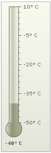
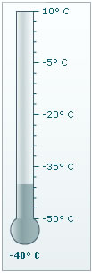
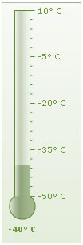

Thermometer Gauge > Configuration
The thermometer gauge chart from FusionWidgets suite offers you a lot of configuration options. Here, we'll see how to:
- Using palettes
- Customizing gauge properties
- Manually setting thermometer radius & height
- Hiding chart value
- Configuring tick marks & values
Let's see each of them one by one.
The thermometer gauge offer 5 pre-defined color palettes for you to choose from. Each of these palettes are accessible by the number 1-5. To choose a palette, all you need to do is set:
<chart palette='2' or '3' or ..>
Shown below are a few examples of palettes applied on our previous chart:
 |
 |
 |
Palette 2 |
Palette 3 |
Custom palette color using
<chart paletteThemeColor='669933' ..> |
You can set the thermometer fill color using:
<chart ... gaugeFillColor='FF5904' gaugeFillAlpha='100' ... >
This results in:
You can also change the border color using:
<chart ... showGaugeBorder='1' gaugeBorderColor='FF5904' gaugeBorderThickness='2' gaugeFillColor='FF5904' gaugeBorderAlpha='80' gaugeFillAlpha='40' ...>
This will result in:
By default, FusionWidgets automatically calculates the best thermometer radius and height. However, if you need to set it manually, you can use:
<chart ... thmBulbRadius='25' thmHeight='220' ..>
This will result in:
You can hide the value for the chart using:
<chart ... showValue='0' ..>
This will result in:

You can opt to hide all tick marks & values using:
<chart ... showTickMarks='0' showTickValues='0' ...>
This will result in:
You can place the ticks to the left or right of thermometer using:
<chart ... ticksOnRight='0' ...>
This will result in:
You can configure the number of tick marks as under:
<chart ... majorTMNumber='8' minorTMNumber='3' ...>
It will result in:
The chart can automatically adjusted the number of major ticks to a best feasible value. However, if you do not want the chart to do the same, you can add:
<chart ... adjustTM='0' majorTMNumber='8' minorTMNumber='3' ...>
You can opt to show every nth tick value by setting:
<chart ... tickValueStep='2' ...>
This will result in every 2nd major tick mark's value being shown, as under:
You can configure tick mark cosmetics using:
<chart ... majorTMColor='333333' majorTMAlpha='100' majorTMHeight='10' majorTMThickness='2' minorTMColor='666666' minorTMAlpha='100' minorTMHeight='7' minorTMThickness='1' tickMarkDistance='2'...>
This will result in: